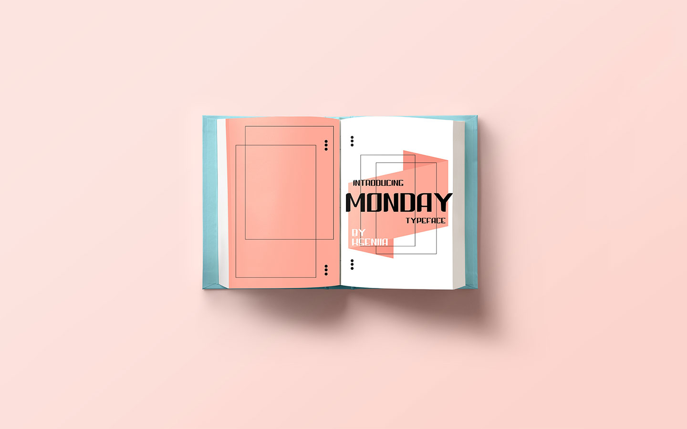

Monday typeface was designed as a part of my Bitmap Alphabet project. Using squares along with triangular and quarter circle shapes I contracted letterforms. It was my first experience working with typography on such a level. Every letter in every alphabet is unique and can be broken down into their core anatomies. This project gave me a better understanding of the construction of each glyph and knowledge of what makes each typeface different.